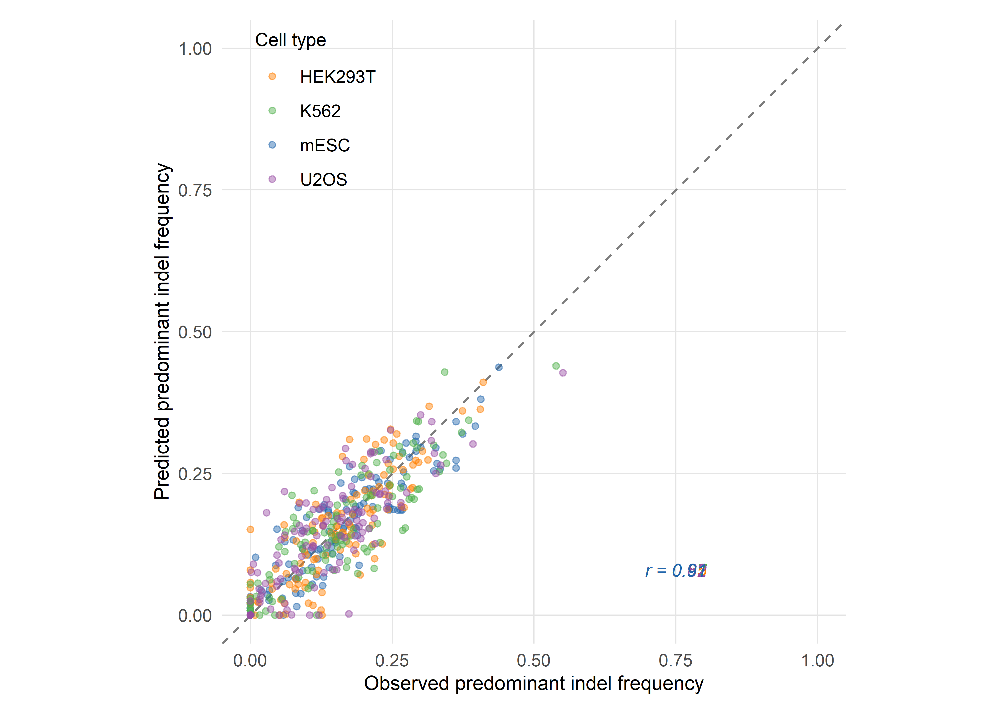
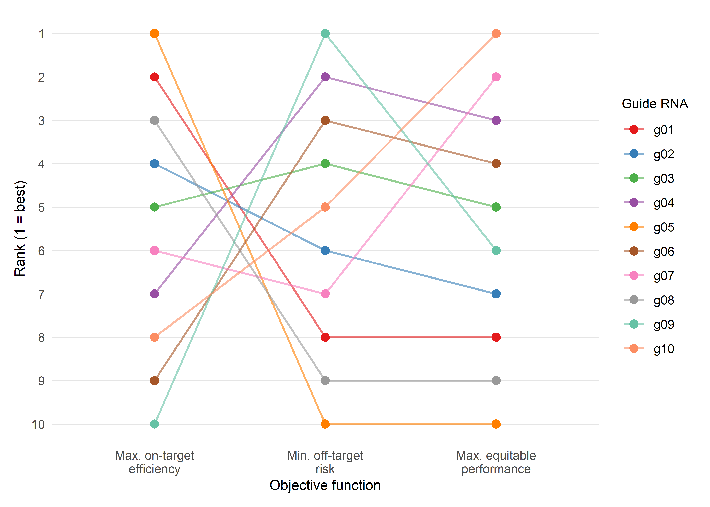

3 AI-Driven Optimisation of Editing Outcomes
3.1 Introduction: from guide selection to outcome engineering
The previous chapter examined how artificial intelligence has transformed the selection of guide RNAs — the first computational decision point in any CRISPR experiment. Yet choosing a guide is only the beginning. Once a double-strand break is introduced, or a base editor deaminates its target cytosine, the outcome is shaped by a cascade of cellular processes over which the experimenter has, historically, limited control. The repair machinery of the cell — non-homologous end joining (NHEJ), microhomology-mediated end joining (MMEJ), homology-directed repair (HDR), and their sub-pathways — produces a distribution of genotypic products that was, until recently, treated as essentially stochastic (Allen et al., 2019; Shen et al., 2018).
The scope of computational genome editing has since expanded well beyond guide selection. AI now informs the prediction of repair outcomes at single-nucleotide resolution, the engineering of Cas proteins with novel properties, the optimisation of delivery vehicles through high-dimensional screening, and the design of multiplexed perturbation experiments that would be intractable without algorithmic coordination. Each of these domains poses a distinct modelling problem, but they share a common logic: the use of learned representations to search combinatorial spaces that exceed the capacity of brute-force experimentation.
Two features of this expansion deserve emphasis. First, the models discussed here are not merely descriptive — many are now generative, proposing novel sequences, formulations, or experimental protocols that have no precedent in training data. Second, and central to the sociotechnical analysis threaded through this monograph, every optimisation encodes a value judgement. To optimise editing efficiency is to accept a particular trade-off between on-target precision and off-target risk; to optimise delivery for a specific tissue is to prioritise one patient population over another. These choices are not technical in the narrow sense — they are political in the sense articulated by Winner (1980), a point to which Sociotechnical Interlude III returns with specific attention to loss functions.
3.2 Predicting repair outcomes: genotype-level modelling
3.2.1 The conceptual breakthrough: repair is not random
The dominant assumption through the early years of CRISPR application was that NHEJ-mediated repair of Cas9-induced double-strand breaks produced unpredictable, heterogeneous insertions and deletions (indels). This view was both empirically incomplete and theoretically convenient: it justified the use of HDR templates for precision editing and discouraged systematic investigation of template-free repair products. Three landmark studies, published in rapid succession between 2018 and 2019, overturned this assumption by demonstrating that repair outcomes are substantially determined by local sequence context at the cut site (Allen et al., 2019; Chen et al., 2019; Shen et al., 2018).
3.2.2 inDelphi: neural networks for indel prediction
Shen, Arbab and colleagues constructed a library of 2,000 Cas9 guide RNAs paired with integrated DNA target sites and profiled the resulting repair products across five human and mouse cell lines (Shen et al., 2018). The resulting dataset — comprising millions of independent repair events — revealed that microhomology-mediated deletions, microhomology-independent deletions, and single-base-pair insertions each followed distinct but learnable patterns. The authors trained inDelphi, a composite machine-learning model that uses separate neural network modules to predict the frequencies of these three outcome classes from local sequence context alone.
inDelphi achieves a Pearson correlation of r = 0.87 between predicted and observed indel frequencies across held-out target sites, and can predict frameshift frequencies with comparable accuracy. The model also identifies a subset of guide RNAs — termed ‘precise-50’ guides — for which a single genotype accounts for at least 50% of all major editing products. Shen and colleagues estimate that 5–11% of all possible Cas9 guides targeting the human genome fall into this category, and they experimentally confirmed precise template-free correction of 195 human disease-relevant alleles, including pathogenic mutations associated with Hermansky–Pudlak syndrome and Menkes disease (Shen et al., 2018). The clinical implication is substantial: for a meaningful fraction of pathogenic variants, template-free editing guided by outcome prediction may offer a viable therapeutic strategy without the efficiency penalties of HDR.
3.2.3 FORECasT and Lindel: complementary architectures
In parallel, Allen and colleagues developed FORECasT (Favoured Outcomes of Repair Events at Cas9 Targets), training on a library of over 40,000 guide–target pairs in mouse embryonic stem cells and human cell lines (Allen et al., 2019). FORECasT employs a regularised logistic regression framework that predicts the frequencies of all major indel products — both deletions (modelled by microhomology length and position) and 1–2 base-pair insertions. The model achieves comparable accuracy to inDelphi on its own test set and, importantly, identifies distinct sequence features that drive insertion versus deletion outcomes.
Chen, McKenna and colleagues independently developed Lindel, a lightweight logistic regression model trained on 6,872 synthetic target sequences yielding approximately 1.16 million independent mutational events in a human cell line (Chen et al., 2019). Lindel’s architecture deliberately prioritises simplicity and interpretability: it uses one-hot encoded sequence features within a six-base-pair window flanking the cut site and achieves competitive performance with substantially fewer parameters than inDelphi’s neural network modules. When trained on an aggregated dataset combining both the Lindel and FORECasT training sequences (14,625 target sites), the model achieves the best overall cross-dataset performance, suggesting that data volume may matter more than architectural complexity for this prediction task (Chen et al., 2019).
3.2.4 Cross-model comparison and the domain adaptation problem
A recent systematic comparison by Gonçalves and colleagues, through the X-CRISP framework, benchmarked inDelphi, FORECasT, Lindel, and the more recent CROTON model on standardised datasets, revealing that no single model dominates across all evaluation metrics and cell types (Seale & Gonçalves, 2025). The key finding is that models trained on data from one cellular context frequently underperform when applied to another — a domain adaptation problem that reflects genuine biological variation in repair pathway usage across cell types. X-CRISP addresses this through a transfer-learning strategy, pre-training on a source cell line and fine-tuning on a small target-cell-line dataset, achieving improved cross-domain generalisation with as few as 200 target-domain training examples.
This domain adaptation challenge is not merely a technical inconvenience. It reflects a fundamental biological reality: the relative activities of NHEJ, MMEJ, and other repair pathways differ across cell types, developmental stages, and disease states. For clinical applications — where the target cells may be haematopoietic stem cells, hepatocytes, or T lymphocytes — a model trained exclusively on HEK293T or mouse embryonic stem cell data cannot be assumed to transfer. The field is moving toward cell-type-specific or cell-type-conditioned models, but this requires the generation of large-scale repair outcome datasets in clinically relevant cell populations, an effort that remains in its early stages.
3.2.5 Base editing outcome prediction: BE-Hive and beyond
The repair outcome prediction framework extends naturally to base editing, where the relevant question shifts from ‘which indels will be produced?’ to ‘which bases will be edited, and with what efficiency and purity?’. Arbab, Shen and colleagues characterised the sequence–activity relationships of 11 cytosine and adenine base editors (CBEs and ABEs) across 38,538 genomically integrated target sites in mammalian cells, generating a comprehensive dataset of editing outcomes that includes not only the intended target nucleotide but also bystander edits at neighbouring positions (Arbab et al., 2020).
The resulting model, BE-Hive, uses a two-component architecture: gradient-boosted trees predict overall editing efficiency (R ≈ 0.7), while a neural network module predicts the full distribution of genotypic outcomes at single-nucleotide resolution (R ≈ 0.9). The bystander editing component is particularly significant, as it models the conditional probabilities of editing at multiple substrate positions within the editing window — a source of unpredictable off-target effects that had previously resisted systematic characterisation. BE-Hive correctly predicts that 675 disease-associated alleles with bystander nucleotides within the editing window will not experience bystander editing, substantially expanding the set of alleles amenable to high-precision base editing (Arbab et al., 2020).
Subsequent models have refined and extended this work. Song and colleagues developed DeepCBE and DeepABE, neural network architectures trained on independent datasets in HEK293T cells, while Marquart and colleagues introduced FORECasT-BE, a gradient-boosted tree model trained on aggregated data from multiple studies and cell types (Pallaseni et al., 2022; Song et al., 2020). FORECasT-BE demonstrates improved cross-dataset generalisation compared to models trained on a single dataset, achieving at least 88% of the best Pearson correlation for every dataset and editing position — a result that parallels the aggregated-training advantage observed in the Lindel nuclease outcome model.
3.2.6 Prime editing outcome prediction
Prime editing introduces additional complexity, as the editing outcome depends not only on the target sequence and the prime editor protein but also on the design of the prime editing guide RNA (pegRNA), including its primer binding site length, reverse transcriptase template sequence, and any engineered structural modifications (Anzalone et al., 2019). Computational prediction of prime editing outcomes is correspondingly more challenging, and the field lags behind nuclease and base editing prediction in both data availability and model maturity. Early tools such as PRIDICT and DeepPrime have demonstrated promising initial results, predicting editing efficiency from pegRNA sequence features, but comprehensive genotype-level outcome prediction for prime editing remains an open problem (Kim et al., 2023).
3.3 Protein engineering with machine learning
3.3.2 ML-coupled combinatorial mutagenesis of Cas9
Lim and colleagues provided an early demonstration of this approach, applying machine-learning-guided screening to combinatorial mutagenesis libraries for Cas9 engineering (Thean et al., 2022). Working with the KKH variant of Staphylococcus aureus Cas9 (KKH-SaCas9), they generated multi-site combinatorial libraries targeting amino acid positions proximal to the target DNA, experimentally characterised a small fraction of variants, and trained regression models to predict the editing activity of the remaining library members in silico.
The ML-based approach reduced the experimental screening burden by up to 95% while enriching top-performing variants by approximately 7.5-fold compared to random sampling. Among the variants identified was N888R/A889Q — located in the WED domain, a region not previously targeted for SaCas9 optimisation — which conferred increased editing activity on both the nuclease and its derived base editor. This result illustrates a key advantage of ML-guided engineering: it can identify beneficial mutations in protein regions that would not be prioritised by structure-guided intuition alone.
3.3.3 Deep mutational scanning and zero-shot prediction
Deep mutational scanning (DMS) provides the data substrate for many ML-guided engineering campaigns. By constructing and phenotyping comprehensive single-mutation libraries, DMS generates fitness landscapes that can be used to train or validate predictive models. For CRISPR enzymes, DMS datasets have been generated for both SpCas9 and SaCas9 variants, revealing the distribution of tolerated, neutral, and deleterious mutations across the protein sequence (Chu et al., 2024; Schmiedel & Lehner, 2019).
A complementary approach bypasses DMS entirely by using zero-shot predictors — models that infer mutational effects from evolutionary information (multiple sequence alignments) or protein language models (PLMs) without any target-specific experimental data. EVmutation, arDCA, and ESM-2-based predictors have all been applied to Cas9 engineering, with varying degrees of success (Meier et al., 2021; Riesselman et al., 2018). The TopVIP framework developed by Chu and colleagues combines zero-shot prediction with iterative low-N experimental validation, demonstrating that four rounds of sampling just 12 variants can identify the true top 1% performers in combinatorial libraries with up to 92.6% accuracy (Chu et al., 2024).
3.3.4 EVOLVEpro: protein language models for rapid directed evolution
The most recent advance in this space is EVOLVEpro, developed by Jiang and colleagues, which integrates protein language model embeddings with a top-layer regression model trained on a small number of experimental observations (Jiang et al., 2025). EVOLVEpro outperforms zero-shot methods across 12 DMS benchmark datasets and has been applied to engineer six different proteins, including a miniature CRISPR nuclease (Cas12f) whose indel formation activity was improved five-fold, and a prime editor whose insertion efficiency was doubled.
The approach is notable for its sample efficiency: EVOLVEpro generates meaningful improvements from as few as 20–50 experimental data points per round, making it accessible to laboratories without high-throughput screening infrastructure. The mutations nominated by EVOLVEpro are distinctive from an evolutionary perspective and insightful from structural analysis, suggesting that the model has learned to explore regions of sequence space distant from natural variation — precisely the regions where the most dramatic functional gains may lie.
3.3.5 Engineering PAM specificity with deep learning
The PAM constraint remains one of the most significant practical limitations of CRISPR systems: each Cas enzyme recognises only a subset of potential target sites in a genome, defined by the PAM sequence immediately adjacent to the protospacer. Several groups have now applied deep learning to the specific problem of engineering PAM recognition. Protein2PAM, an evolution-informed model trained on over 45,000 CRISPR-Cas PAMs, predicts PAM specificity directly from Cas protein sequence across Type I, II, and V systems and has been used to computationally evolve Nme1Cas9 variants with broadened PAM recognition and up to 50-fold increases in cleavage rate compared to wild type (Nayfach et al., 2025).
In parallel, Kleinstiver and colleagues have developed PAMmla, a machine-learning-assisted framework for generating custom SpCas9 variants with altered PAM specificities, using in silico directed evolution guided by learned fitness functions (Kleinstiver et al., 2025). These approaches bring together protein language models, evolutionary data, and experimental validation in a way that is likely to generalise to other Cas protein engineering challenges, including the reduction of immunogenicity and the optimisation of base editor deaminase domains.
3.4 Delivery optimisation through computational approaches
3.4.1 The delivery bottleneck
The clinical translation of CRISPR therapies is constrained not only by editing efficiency and specificity but also, and often primarily, by the challenge of delivering the editing machinery to target cells in vivo with sufficient potency, tissue specificity, and safety (Wang et al., 2020). Lipid nanoparticles (LNPs) and adeno-associated viral (AAV) vectors represent the two dominant delivery modalities, each with a vast design space that has proven amenable to computational optimisation.
3.4.2 Bayesian optimisation of lipid nanoparticle formulations
LNP formulations are defined by multiple continuous parameters — the identity and molar ratio of ionisable lipids, helper lipids, cholesterol, and PEG-lipids, as well as process parameters such as mixing speed and N/P ratio — creating a combinatorial space that is too large for exhaustive experimental screening. Bayesian optimisation (BO) provides a principled framework for this problem: it constructs a probabilistic surrogate model (typically a Gaussian process) of the objective function (e.g., transfection efficiency in target cells) and uses an acquisition function to select the most informative experiments in each round, balancing exploration of unknown regions against exploitation of promising candidates (Angermueller, Dohan, Belanger, Murphy, et al., 2020; Shields et al., 2021).
Several groups have applied BO to LNP formulation discovery, demonstrating that 5–10 rounds of iterative experimentation — each involving the synthesis and testing of 10–20 formulations — can identify top-performing candidates from a design space comprising millions of possible combinations. The approach is particularly valuable when multiple objectives must be balanced simultaneously, such as maximising transfection efficiency in hepatocytes while minimising uptake in splenic macrophages. Multi-objective Bayesian optimisation naturally accommodates such trade-offs by constructing a Pareto frontier of non-dominated solutions (González et al., 2016).
3.4.3 Predicting AAV tissue tropism from capsid sequence
For AAV-based delivery, the key engineering challenge is tissue tropism: the ability of a viral capsid to transduce specific cell types while avoiding others. The AAV capsid surface is determined by the VP1, VP2, and VP3 subunit proteins, and sequence variation in hypervariable regions of VP1 dictates tropism. Directed evolution of AAV capsids through in vivo biopanning — infecting animal models with capsid libraries and recovering variants enriched in target tissues — has yielded clinically useful serotypes, but the process is slow, expensive, and poorly understood mechanistically (Deverman et al., 2016).
Machine-learning models trained on biopanning data can predict tissue tropism from capsid sequence, enabling in silico screening of candidate capsids before experimental validation. These models range from simple regression on engineered sequence features to deep learning architectures that operate on raw amino acid sequences, and they have been used to identify novel capsids with enhanced tropism for the central nervous system, liver, and muscle — the three tissues of greatest current clinical interest for CRISPR delivery (Bryant et al., 2021; Ogden et al., 2019).
3.4.4 Electroporation and RNP delivery optimisation
For ex vivo applications — particularly the editing of haematopoietic stem and progenitor cells (HSPCs) and T lymphocytes — electroporation of ribonucleoprotein (RNP) complexes is the dominant delivery method. Here, the design space includes electrical parameters (voltage, pulse duration, number of pulses), RNP concentration, cell density, and media composition. While less commonly addressed by formal ML frameworks than LNP or AAV optimisation, several groups have applied design-of-experiments (DoE) and response surface methodology to systematically explore electroporation parameter spaces, with emerging applications of Bayesian optimisation to this modality as well (Roth et al., 2018).
3.5 Multiplexed and combinatorial editing
3.5.1 The rationale for multiplexed perturbation
Many therapeutic applications and fundamental biological questions require the simultaneous perturbation of multiple genomic loci. In functional genomics, combinatorial CRISPR screens probe genetic interactions — epistasis, synthetic lethality, buffering — that cannot be detected by single-gene perturbations. In therapeutic contexts, multigene editing may be necessary to address polygenic diseases, engineer complex cellular phenotypes (e.g., armoured CAR-T cells), or simultaneously disrupt and correct distinct loci (Adamson et al., 2016).
The design of multiplexed CRISPR experiments is a combinatorial problem that scales explosively with the number of target genes: a pairwise screen of 100 genes requires 4,950 guide combinations, and higher-order interactions increase the dimensionality further. AI-driven approaches address this challenge at multiple levels: optimising guide library composition, designing experimental layouts that maximise information per cell, and analysing the resulting high-dimensional phenotypic data.
3.5.2 Perturb-seq and single-cell readouts
Perturb-seq (and related approaches such as CROP-seq and CRISP-seq) combines pooled CRISPR screens with single-cell RNA sequencing, enabling the simultaneous measurement of perturbation identity and transcriptomic phenotype in individual cells (Datlinger et al., 2017; Dixit et al., 2016). The resulting datasets are high-dimensional — thousands of genes measured across thousands of perturbation conditions — and their analysis requires sophisticated computational frameworks including variational autoencoders, Gaussian process latent variable models, and causal inference methods (Lotfollahi et al., 2023).
For multiplexed editing, the experimental design problem becomes acute: which combinations of guides should be included in the library to maximise the informativeness of the screen while minimising library complexity and sequencing cost? ML-based experimental design tools address this by predicting which guide combinations are likely to reveal the strongest genetic interactions, prioritising these for inclusion and deprioritising redundant or uninformative combinations (Norman et al., 2019).
3.5.3 Multi-target editing: scheduling and interference
When multiple edits are introduced simultaneously in vivo or ex vivo, the editing events are not independent: competition for the editing machinery, chromatin accessibility changes induced by one edit, and activation of DNA damage responses can all modulate the efficiency of subsequent edits. Computational models of editing interference and sequential scheduling are emerging to address this challenge, though the field is substantially less mature than single-target outcome prediction (Gonatopoulos-Pournatzis et al., 2020).
3.6 Reinforcement learning and generative models
3.6.1 Beyond prediction: generative approaches
The models discussed thus far are primarily discriminative: given an input (a target sequence, a protein variant, a formulation), they predict an output (an indel distribution, an activity score, a transfection efficiency). A complementary paradigm is generative modelling, in which the algorithm proposes novel inputs — sequences, structures, or experimental designs — that are predicted to satisfy specified functional criteria.
Generative approaches to CRISPR optimisation include variational autoencoders (VAEs) trained on CRISPR–Cas protein families that can sample novel sequences from the learned latent space, generative adversarial networks (GANs) that produce synthetic guide RNA sequences with predicted high activity, and diffusion models that generate protein structures conditioned on desired functional properties (Madani et al., 2023; Ruffolo & Madani, 2024). These methods are still in their early stages of application to genome editing, but they mark a departure from optimisation-within-a-known-space toward design-of-novel-entities.
3.6.2 Reinforcement learning for experimental protocols
Reinforcement learning (RL) offers a distinct framework for optimisation in which an agent learns a policy — a mapping from experimental states to actions — by iteratively taking actions in an environment and receiving reward signals. In the context of genome editing, RL has been applied to the sequential design of experimental protocols: given a current state of knowledge (e.g., the results of previous editing experiments), the RL agent selects the next experiment to perform (e.g., the next guide to test, the next formulation to synthesise) so as to maximise cumulative reward (e.g., the probability of identifying an optimal editing strategy within a fixed experimental budget) (Angermueller, Dohan, Belanger, Deshpande, et al., 2020).
The RL framework is naturally suited to the adaptive, sequential nature of experimental optimisation, where each experiment generates information that should inform the design of subsequent experiments. It is also well-suited to multi-objective problems, where the agent must balance competing desiderata — efficiency, specificity, deliverability, cost — without a priori specification of their relative weights.
3.6.3 Foundation models and genome editing
The rapid development of large foundation models for biology — including protein language models (ESM-2, ProGen2), genomic language models (Evo, Nucleotide Transformer), and multimodal models that integrate sequence, structure, and function — raises the question of whether genome editing will benefit from the same scaling dynamics observed in natural language processing (Dalla-Torre et al., 2025; Lin et al., 2023; Nguyen et al., 2024). Early results are promising: ESM-2 embeddings improve Cas protein engineering (as demonstrated by EVOLVEpro), and genomic language models can predict the functional consequences of genetic variants with increasing accuracy (Jiang et al., 2025).
However, the application of foundation models to genome editing faces specific challenges. The relevant phenotypes — editing efficiency, repair outcome distributions, tissue tropism — are experimentally expensive to measure, limiting the availability of labelled training data. The biological systems involved are stochastic and context-dependent, making zero-shot generalisation unreliable. And the stakes of error are high: in a clinical setting, a false-positive prediction of editing precision could have severe consequences. These considerations argue for a continued emphasis on hybrid approaches that combine foundation model representations with task-specific, experimentally validated models — a strategy that EVOLVEpro and similar frameworks explicitly adopt.
3.7 Sociotechnical Interlude III: optimisation as a value-laden practice
The preceding sections have documented a progressive expansion of computational methods across every stage of genome editing — from repair outcome prediction to protein engineering, delivery design, and experimental planning. It would be easy to read this expansion as straightforwardly technical progress: imprecise methods yielding to more precise ones. But an STS perspective reveals that ‘optimisation’ is never a neutral operation: it always optimises for something and at the cost of something else.
The loss function makes this concrete. When inDelphi is trained to predict repair outcome frequencies, the implicit objective is to minimise the discrepancy between predicted and observed genotypic distributions. But which genotypes matter? The model treats all indel products equally, assigning no differential weight to clinically relevant versus clinically irrelevant outcomes. A model optimised for therapeutic applications might instead minimise the frequency of specific deleterious genotypes, or maximise the frequency of a desired corrective edit — objectives that embed clinical judgements about what counts as a ‘good’ outcome. This is precisely the kind of choice that Langdon Winner’s foundational analysis of the politics of artefacts was designed to illuminate: the loss function, no less than a bridge or a building code, embeds a political decision about whose interests are served (Winner, 1980). At the same time, the quantitative authority that surrounds these choices — the Pearson correlations, the mean squared errors, the precision-50 percentages — works in the manner that Theodore Porter describes in Trust in Numbers: measurement produces an impersonal authority that can obscure the contingency of the decisions it encodes (Porter, 1995). A model that achieves r = 0.87 on a benchmark dataset acquires a form of epistemic credibility that may not be warranted when the model is applied to a different cell type, a different disease context, or a different patient population. The danger is not that the numbers are wrong but that their precision creates a false sense of certainty about a fundamentally uncertain — and fundamentally political — process.
Winner and Porter thus address different but interlocking dimensions of the same problem. Winner asks what values are embedded in the artefact; Porter asks how the artefact’s quantitative presentation conceals those values. For repair outcome prediction models, the loss function determines which outcomes are valued (Winner’s question), and the performance metric determines how confidently those values are communicated (Porter’s question). Both forms of concealment must be addressed if AI-driven optimisation is to be governed rather than merely deployed.
For the CRISPR-AI field, this requires, at minimum, transparent documentation of loss functions and their clinical implications, systematic evaluation of model performance across diverse populations and cell types, and mechanisms for patient and public input into the definition of ‘optimal’ outcomes. Chapter 8 develops the ethical frameworks available for such governance, and Chapter 9 examines prospective scenarios for integrating these considerations into clinical practice.

3.8 Chapter summary
The extension of AI from guide RNA selection (Chapter 2) to the optimisation of editing outcomes operates across multiple scales, from genotype-level repair product prediction through protein engineering and delivery design to multiplexed experimental planning and generative modelling.
Repair outcome prediction models — inDelphi, FORECasT, Lindel, and their successors — have established that CRISPR-mediated DNA repair is substantially predictable from local sequence context, with Pearson correlations of 0.85–0.90 between predicted and observed indel frequencies. This predictability extends to base editing outcomes through BE-Hive and related models; the primary open challenge remains domain adaptation across cell types and biological contexts.
Machine-learning-guided protein engineering has, in turn, reduced the experimental screening burden for Cas protein optimisation by up to 95%, enabling the discovery of novel variants with improved activity, altered PAM specificity, and reduced immunogenicity. Protein language models and zero-shot predictors are now routinely paired with low-N experimental validation, as exemplified by EVOLVEpro and TopVIP.
Delivery optimisation through Bayesian methods and ML-predicted tissue tropism addresses the persistent bottleneck of in vivo CRISPR delivery, particularly for LNP formulation and AAV capsid engineering. Meanwhile, generative models and reinforcement learning open an emerging frontier, shifting the operative logic from selecting among known candidates to designing novel entities and protocols — a transition with significant implications for the scale and speed of genome editing innovation.
The Sociotechnical Interlude has argued that optimisation is inherently value-laden, encoding choices about whose outcomes matter and what trade-offs are acceptable. Making these choices explicit is essential for the responsible integration of AI-driven optimisation into clinical genome editing — a theme that gains institutional specificity in Chapter 4, where the focus shifts from computational foundations to therapeutic application in genetic rare diseases, including Lynch syndrome, informed by the tools developed across Part I.